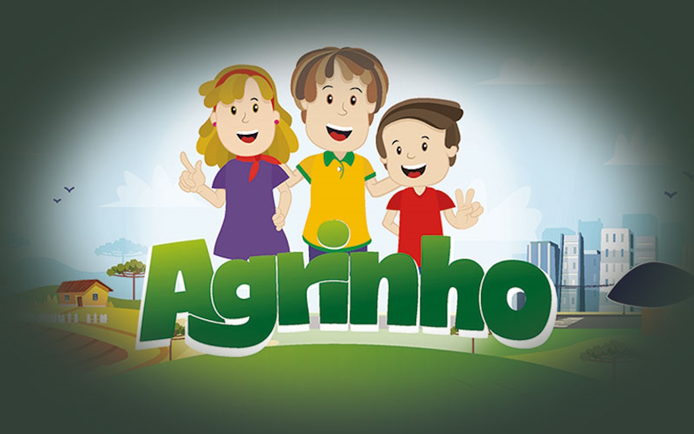
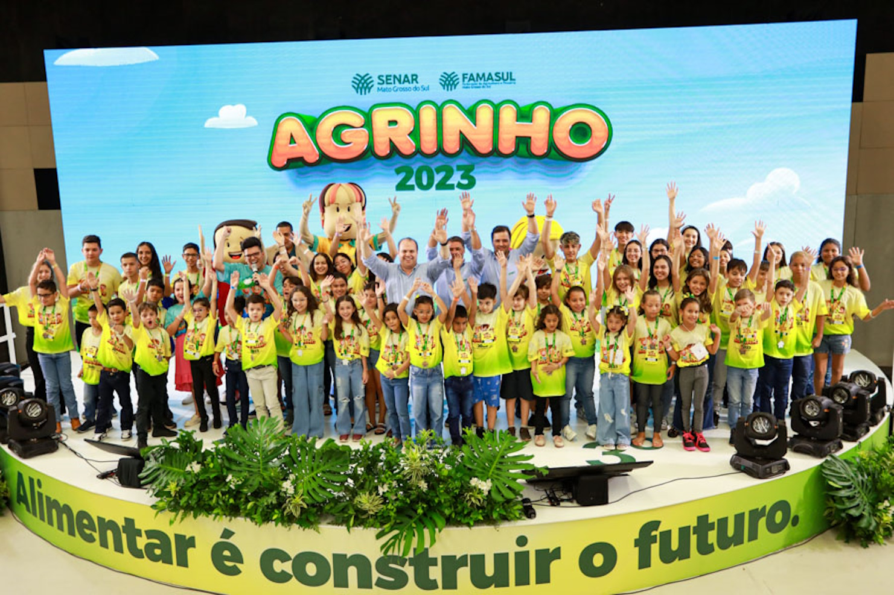
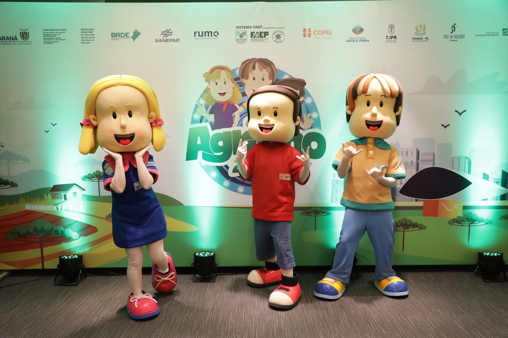
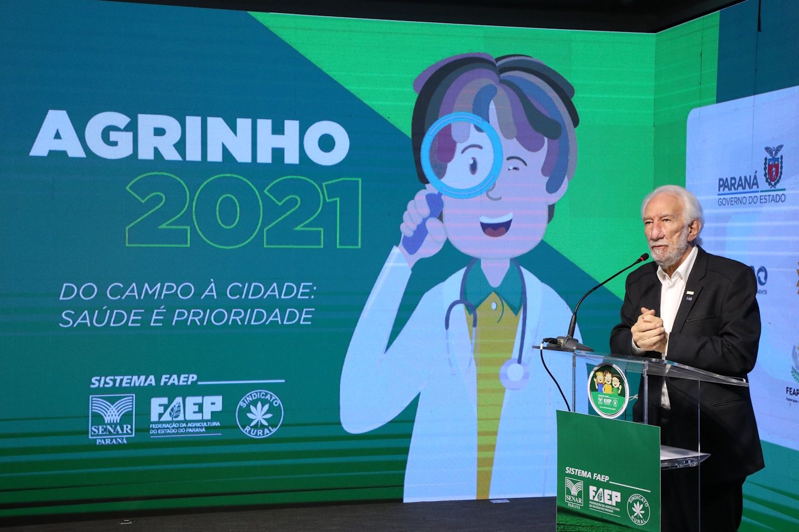
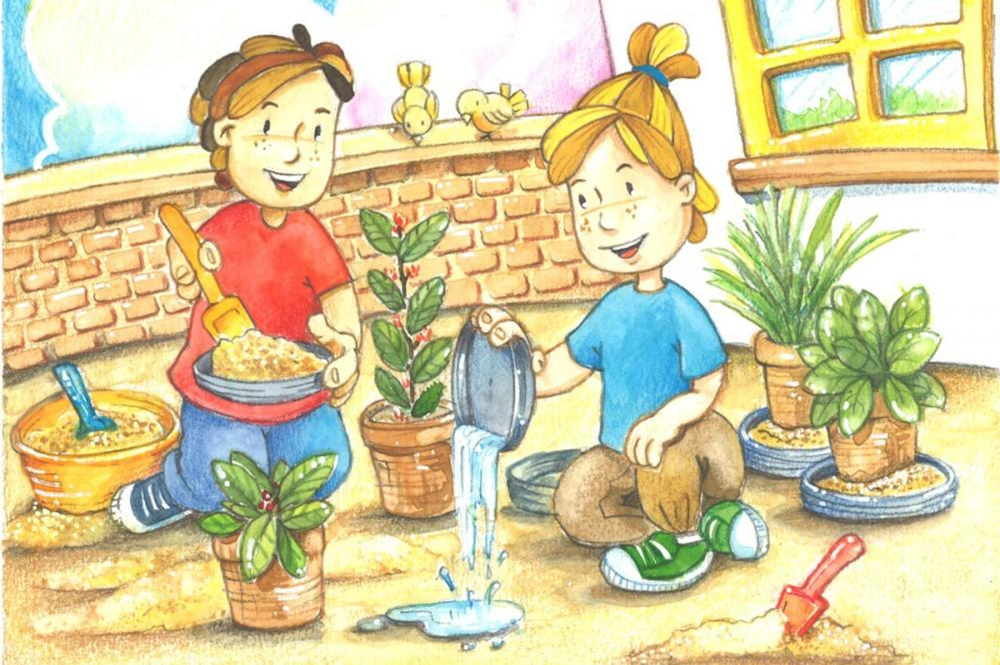
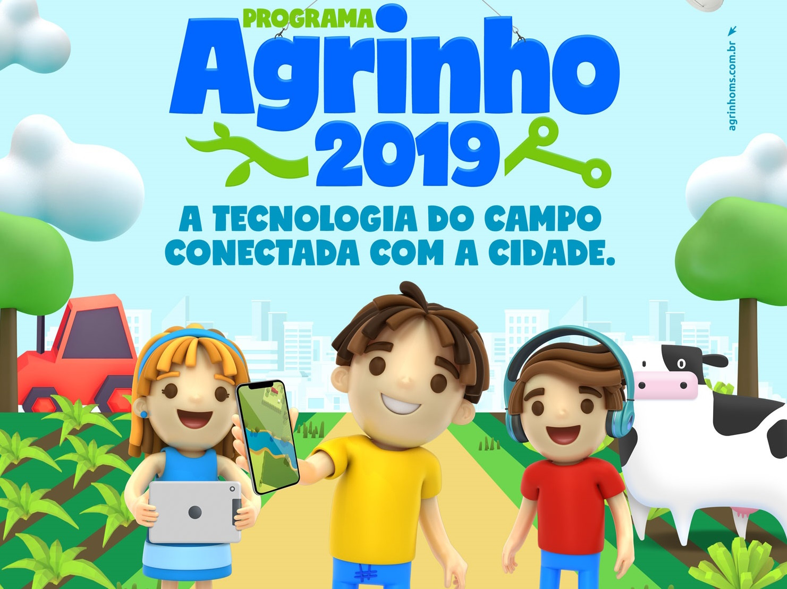

Retrospectiva do Projeto Agrinho (2019-2024)
O Projeto Agrinho é uma iniciativa educacional e social apoiada pelo sistema FAEP/SENAR, focada no desenvolvimento de atividades educativas e práticas no setor agropecuário e na formação de jovens. Esta promoção tem como objetivo sensibilizar para o ambiente e a sustentabilidade. Nos últimos quatro anos, Agrinho se destacou por suas ações e influência positiva. Aqui você encontrará uma análise detalhada dos eventos e conquistas mais importantes do projeto de 2019 a 2024.
O Programa completa 26 anos de trabalhos no Paraná. Concebido em 1995, foi à campo em 1996, levando às escolas da rede pública de ensino uma proposta pedagógica baseada em visão complexa, na inter e transdisciplinaridade e na pedagogia da pesquisa. Anualmente, o programa envolve a participação de aproximadamente 800 mil crianças e mais de 50 mil professores da educação infantil, do ensino fundamental e da educação especial, estando presente em todos os municípios do Estado.
Galeria
     Notícias e Atualizações
Acompanhe as últimas notícias e atualizações sobre o programa Agrinho até o momento: 07 de agosto de 2024
Concurso Agrinho 2024 está com inscrições abertas até 20 de agosto:
Clique AquiGoiás, Escolas públicas e privadas podem se inscrever no Agrinho 2024 até o dia 6 de setembro:
Clique Aqui